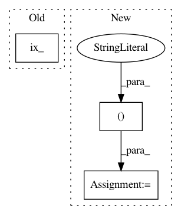

5cc1974f060cc273bfe87abc270401bb9ccb297e,geomstats/riemannian_metric.py,RiemannianMetric,optimal_quantization,#RiemannianMetric#Any#Any#Any#Any#Any#,372
Before Change
step_size = gs.floor(iteration / n_repetitions) + 1
random_index = gs.random.randint(low=0, high=n_points, size=(1,))
point = points[gs.ix_(random_index, gs.arange(dimension))]
index_to_update = self.closest_neighbor_index(point, centers)
center_to_update = centers[index_to_update, :]
After Change
random_indices = gs.random.randint(low=0, high=n_points,
size=(n_centers,))
centers = points[gs.indexing(random_indices), :]
gap = 1.0
iteration = 0
while iteration < n_max_iterations:
iteration += 1
step_size = gs.floor(iteration / n_repetitions) + 1
random_index = gs.random.randint(low=0, high=n_points, size=(1,))
point = points[gs.indexing(random_index), :]
index_to_update = self.closest_neighbor_index(point, centers)
center_to_update = centers[index_to_update, :]
tangent_vec_update = self.log(
point=point, base_point=center_to_update
) / (step_size+1)
new_center = self.exp(
tangent_vec=tangent_vec_update, base_point=center_to_update
)
gap = self.dist(center_to_update, new_center)
gap = gs.byte_to_float(gap != 0) * gap + gs.byte_to_float(gap == 0)
centers[index_to_update, :] = new_center
if gs.isclose(gap, 0, atol=tolerance):
break
if iteration == n_max_iterations-1:
print("Maximum number of iterations {} reached. The"
"quantization may be inaccurate".format(n_max_iterations))
clusters = dict()
weights = gs.zeros((n_centers,))
index_list = list()
for point in points:
index = self.closest_neighbor_index(point, centers)
index = index.item()
if index not in index_list:
clusters[index] = list()
index_list.append(index)
clusters[index].append(point)
In pattern: SUPERPATTERN
Frequency: 3
Non-data size: 3
Instances
Project Name: geomstats/geomstats
Commit Name: 5cc1974f060cc273bfe87abc270401bb9ccb297e
Time: 2019-08-25
Author: alice.le-brigant@enac.fr
File Name: geomstats/riemannian_metric.py
Class Name: RiemannianMetric
Method Name: optimal_quantization
Project Name: slinderman/pyhawkes
Commit Name: f5fc04d49bfd446086ff604cb9cad4f22fed02eb
Time: 2015-01-26
Author: scott.linderman@gmail.com
File Name: pyhawkes/internals/network.py
Class Name: GibbsSBM
Method Name: resample_c
Project Name: epfl-lts2/pygsp
Commit Name: d8e610c04662817816d5d7cb5de2578cb48f3ddb
Time: 2015-12-09
Author: lionel.martin@epfl.ch
File Name: pygsp/graphs/graph.py
Class Name: Graph
Method Name: subgraph